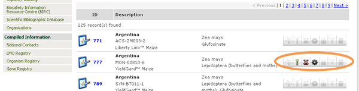
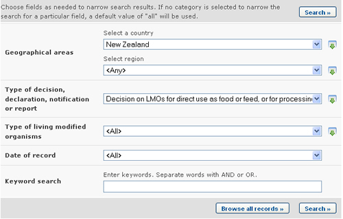

URL: http://bch.cbd.int/database/decisions/
En el marco del Protocolo de Cartagena, las Partes tienen la responsabilidad de que la información sobre sus decisiones relevantes, declaraciones y otras comunicaciones esté disponible a través del CIISB.
La página de búsqueda de información acerca de Decisiones de País y otras Comunicaciones puede ser obtenida en el menú desplegable Búsqueda de Información en la barra de navegación, o en el vínculo en la barra lateral izquierda del menú de la página Búsqueda de Información, o en el vínculo Decisiones de País y otras Comunicaciones del texto de dicha página.
Esta base de datos permite a los usuarios buscar decisiones y otras comunicaciones relacionadas con:
-
Decisiones sobre osu confinado de OVM (Artículo 6.2)
-
Decisiones sobre uso de OVM para uso directo como alimento humando o animal, o para procesamiento (Artículo 11, OVM-AHAP)
-
Decsisiones sobre uso nacional de un OVM, incluída su colocación en el mercado.
-
Decisiones sobre importación de OVM
-
-
Decisiones sobre OVM para introducción deliberada en el medio (artículo 7-10)
-
Decisiones adoptadas conforme al procedimiento de acuerdo fundamentado previo (AFP) especificado en el artículo 10.
-
Decisiones adoptadas conforme a su marco reglamentario nacional
-
-
Decisiones sobre productores farmacéuticos (artículo 5)
-
Decisiones sobre tránsito de OVM (artículo 6.1)
-
Decisiones conforme al procedimiento simplificado (artículo 13)
-
Otras decisiones, notificaciones, declaraciones o comunicaciones
-
Comunicaciones de información acerca de “Manipulación, transporte, envasado e identificación” (artículo 18)
-
Declaraciones formuladas al ratificar el Protocolo o adherirse al mismo
-
Declaraciones en cuanto a que, en el caso de un existir un marco reglamentario nacional, las decisiones sobre OVM-AHAP se adoptarán conforme al artículo 11.6.
-
Notificaciones de movimientos transfronterizos ilícitos de OVM (artículo 25.3)
-
Notificaciones de que una Parte no tiene acceso al Centro de Intercambio de Información sobre Seguridad de la Biotecnología (Artículo 11.1)
-
Notificaciones de que se aplicarán los reglamentos nacionales respecto a importaciones específicas de OVM (artículo 14.4)
-
-
Evaluaciones de Riesgo.
En la página de Búsqueda de Decisiones de País y Otras Comunicaciones hay varios cuadros de criterios de búsqueda:
-
País: Campo de lista de selección para seleccionar un país.
-
Región: Campo de lista de selección para seleccionar una región.
-
Tipo de decisión, declaración, notificación o informe: Campo de lista de selección para refinar la búsqueda de acuerdo a ciertos tipos de decisiones, declaraciones, notificaciones o reportes.
-
Tipo de Organismo Vivo Modificado: Campo de criterio de búsqueda adicional para agregar diferentes criterios de búsqueda.
-
Fecha del Registro: Campo de fecha para acotar la búsqueda a un cierto intervalo de tiempo.
-
Búsqueda por Palabra clave: Palabra clave para refinar resultados según palabras claves.
Vea “cómo usar las páginas de búsqueda” para aprender sobre distintos tipos de campos y su forma de operar.
Los resultados de la búsqueda se despliegan en la página Resultados de Comunicaciones de países. En primer lugar, aparece una serie de íconos a la derecha de cada registro. Estos íconos indican a que categorías de uso de LMO se refiere el registro. Por ejemplo, algunos registros pueden contener decisiones relativas a un LMO para uso como alimento humano o animal, o para procesamiento, mientras otros pueden contener una decisions sobre un OVM para ser introducido al medio ambiente.

Un icono a color significa que el registro comprende esa categoría de uso de OVM, mientras que los íconos grises indican que no la comprende. El significado de cada ícono se describe en la siguiente tabla.
| Introducción intencional al medio ambiente | |
| Uso directo como alimento humano | |
| Uso directo para alimento animal | |
| Para procesamiento | |
| Uso confinado | |
| Farmaceútico | |
| Tránsito |
Además de las funcionalidades descriptas en “Manejo de resultados de búsqueda”, esta página de resultados tiene funcionalidades para agrupar y ordenar los registros en la lista de resultados. La funcionalidad de agrupacion muestra una vista agrupada de los resultados al seleccionar una opción en la casilla “Group records by” (ordenar registros según). Por ejemplo, al seleccionar “Country” (País), el resultado es ordenado en carpetas, de modo que todos los registros de un mismo pais aparecen dentro de una misma carpeta etiquetada con el nombre del país. Al hacer clic sobre la flecha a la derecha de la carpeta, ésta se abrira y se mostrarán sus registros.
El casillero “Sort records by” (Ordenar registros según) permite ordenar los registros según el criterio especificado. Se pueden definir varias etapas de ordenamiento mediante el uso de los campos “and then” (y luego) que aparecen cada vez que se selecciona un opcion de ordenamiento. Por ejemplo, los resultados de pueden ser ordenados por país al seleccionar la opción en el casillero “sort records by”; registros de un mismo país pueden además ser ordenados por OVM al seleccionar “LMO” en el casillero “and then” que aparece.

Además, la página de resultados contiene un casillero en el cual el usuario puede seleccionar cuantos registros se mostrarán en casa página. También hay un enlace para descargar los resultados en formato CSV (comma separated values), de modo que estos puedan ser usados e insertados en otros documentos y manejados por otras aplicaciones.
Ejemplo. Un usuario desea encontrar todas las decisiones tomadas por Nueva Zelanda bajo el Artículo 11 del Protocolo de Cartagena. Seleccione Nueva Zelanda en el cuadro Seleccionar un país. Seleccione Decisión sobre OVM para uso directo como alimento humano, animal o para procesamiento (artículo 11, OVM-AHAP) en el cuadro Tipo de decisión, declaración, notificación o reporte. Presione el botón
Los resultados de la búsqueda se muestran como una lista de registros. La información detallada acerca de cada registro puede ser vista haciendo clic en el número de ID del registro (en negrita de color azul).


Esta imagen fue tomada en Febrero del 2010 con el único propósito de proveer un ejemplo sobre el uso del CIISB.